Pengenalan Android
- 1. Apa itu Andoid?
- 2. Sejarah Android
- 3. Android 4.0 (Ice Cream Sandwich)
- 4. Android 4.1 (Jelly Bean)
- 5. Android 4.4 (Kitkat)
Apa Itu Android???
- Android adalah sistem operasi berbasis Linux yang dirancang untuk perangkat seluler layar sentuh seperti smartphone dan tablet. Android didasarkan pada manipulasi langsung, menggunakan metode masukan sentuhan yang serupa dengan tindakan di dunia nyata, seperti menggesek, mengetuk, dan mencubit untuk memanipulasi obyek di layar.
Sejarah Android

- Andy Rubin
- Android, Inc. didirikan di Palo Alto, California, pada bulan Oktober 2003 oleh Andy Rubin, Rich Miner, Nick Sears, dan Chris White untuk mengembangkan "perangkat seluler pintar yang lebih sadar akan lokasi dan preferensi penggunanya"
Android 4.0 (Ice Cream Sandwich)

- Android versi ini (atau bisa disingkat ICS) memiliki beberapa kelebihan dibandingkan dengan android versi sebelumnya. Berikut beberapa kelebihan dari ICS :
1. Home Screen

- Kita dapat merubah ukuran widget sesuka kita, sehingga tampilannya akan terlihat lebih nyaman. Ikon aplikasi dapat diseret ke dalam folder. Tapi pada Ice Cream Sandwich lebih unggul dari iPhone karena kita bisa menempatkan kontak seseorang atau semacam jalan pintas panggilan cepat ke dalam folder juga, dan bahkan menempatkan orang dalam favorit.
2. Keyboard

- Sedikit update pada bagian keyboard yaitu kemampuan inline pemeriksaan ejaan. Sayangnya masih belum support bahasa Indonesia.
3. Roboto

- Droid Sans yang telah menjadi font di Android telah diganti dengan typeface baru bernama Roboto.
4. Face Unlock

- Untuk membuka layar (lockscreen) tersedia opsi selain menggeser (slide), PIN & Password. Sekarang tersedia pendeteksi wajah yang cukup keren dan canggih. Hanya dengan mendekatkan wajah ke gadget, maka Android akan mengenalinya lalu membuka layar buat pengguna.
5. Taking Screenshots

- Kita bisa dengan mudah mengambil screenshot (tampilan layar yg sedang aktif) tanpa harus menginstal aplikasi tambahan. Caranya mudah, hanya dengan menekan tombol power + volume down secara bersamaan, atau tombol power + home sekaligus. Tidak lebih dari satu detik, secara otomatis akan keluar bingkai (frame) warna putih, yang menandakan proses screenshoot berhasil. Gambarnya bisa dilihat pada gallery.
6. Flexible Widgets

- Widget merupakan icon aktif yang mirip fungsi shortcut pada Windows. Widget akan mempersingkat waktu untuk membuka aplikasi yang sering digunakan atau dilihat, misalnya news, cuaca atau musik. Kita bisa menemukan dan mengatur widget dalam menu aplikasi melalui tab "widget". Atau dengan menekan icon aplikasi beberapa detik untuk menampilkan widget tsb di homescreen (layar depan).
7. Notifications

- Google melakukan perombakan besar di area ini. Kini music control telah terintegrasi dan notifikasi juga mudah dihilangkan dengan cara swipe ke kiri atau kanan. Pengguna juga bisa mengintip notifikasi kendati layar ponsel dalam keadaan terkunci.
8. Advanced Call Options

- Kita bisa menolak atau mengakhiri panggilan hanya dengan menggunakan tombol power saja, jadi tidak perlu lagi mencari tombol merah "End Call". Kita juga bisa menolak panggilan atau menolak dengan SMS. Untuk melakukan hal ini cukup pilih pengaturan pada "Call".
9. Transfer Data Dengan Android Beam

- Melalui Android Beam ini kita bisa mentransfer data antara dua perangkat dengan cara yang mudah. Teknologi ini menggunakan fitur NFC (Near Field Communication), tetapi kedua ponsel harus menjalankan Android Beam terlebih dahulu. Dengan begitu kita bisa dengan mudah mentransfer foto, contact atau file multimedia hanya dengan mendekatkan dua gadget (tanpa perlu menyentuhnya). (Android Beam tidak tersedia pada semua gadget, hanya perangkat tertentu saja.)
Android Jelly Bean

Google mengumumkan Android 4.1 (Jelly Bean) dalam konferensi Google I/O pada tanggal 27 Juni 2012. Berdasarkan kernel Linux 3.0.31, Jelly Bean adalah pembaruan penting yang bertujuan untuk meningkatkan fungsi dan kinerja antarmuka pengguna (UI). Pembaruan ini diwujudkan dalam "Proyek Butter", perbaikan ini termasuk antisipasi sentuh, triple buffering, perpanjangan waktu vsync, dan peningkatan frame rate hingga 60 fps untuk menciptakan UI yang lebih halus.
10 Fitur Unik di Android Jelly Bean
1. Google Now

- Google Now dikatakan akan memberikan kepada pengguna informasi yang tepat pada saat yang tepat pula. Informasi dalam Google Now disajikan dalam bentuk kartu-kartu informasi yang merepresentasikan beberapa jenis informasi yang berbeda-beda seperti cuaca, lokasi, skor olahraga dan sebagainya.
2. Notifications
- 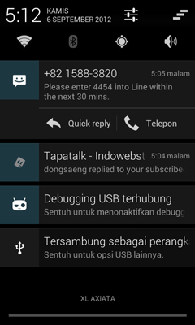
- Meski bar notifikasi yang diusung oleh Jelly Bean tidak mengalami banyak perubahan, namun begitu Anda dapat dengan mudah melihat beberapa peningkatan. Salah satunya ketika Anda menerima pesan sms, maka bar notifikasi akan menampilkan pilihan quick reply yang memungkinkan Anda untuk menjawab langsung pesan tanpa harus masuk ke menu pesan. Anda juga dapat menelepon langsung dengan memilih telepon. Sementara itu ketika Anda menerima email masuk, maka Anda dapat melihat preview dari email tersebut.
3. Google Assistant
- 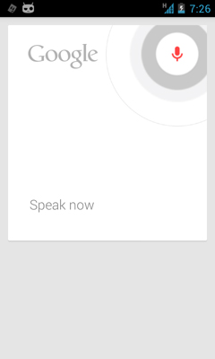
- Popularitas SIRI besutan Apple, tentu telah membuat kompetitor untuk mau tidak mau mengejar dengan menawarkan produk serupa dengan kualitas yang lebih baik. Untuk itulah Google meluncurkan Google Assistant, yang menggunakan basis fitur perintah suara. Anda dapat mengirim sms, email, menelepon teman dan sebagainya. Untuk mengaktifkan Google Assistant, silakan tekan ikon mikrofon yang terdapat pada kotak pencarian Google.
4. Face Unlock dengan Liveness Check

- Face Unlock pada Jelly Bean memang bukanlah hal yang baru, karena fitur ini telah diperkenalkan sebelumnya pada versi Ice Cream Sandwich. Namun begitu, Anda semua tentu telah tahu bahwa Face Unlock dapat dengan mudah dikelabui menggunakan foto. Oleh karena itu pada update Android yang terbaru ini, Google menambahkan fitur Liveness Check yang mengharuskan pengguna mengedipkan matanya untuk membuka kunci layar. Jika pengguna tidak mengedipkan mata, Jelly Bean akan mengharuskan Anda untuk memasukkan password atau pola sesuai dengan pengaturan yang Anda lakukan saat fitur Face Unlock diaktifkan.
5. Screen Capture
- 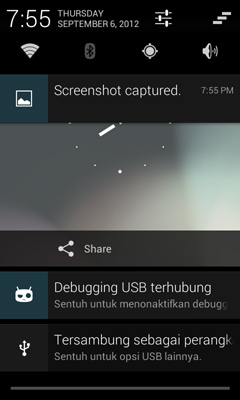
- Meski juga bukan merupakan fitur baru, Google menambahkan beberapa fitur baru pada Jelly Bean. Untuk mengambil screen capture, Anda cukup menekan tombol power dan volume bagian bawah secara berbarengan. Setelah gambar berhasil diambil, pengguna dapat langsung mengeditnya. Anda dapat melakukan cropping, rotasi, dan membagikannya melalui email atau jejaring sosial.
6. Say it Offline
- 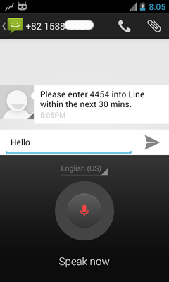
- Speech to text memang merupakan fitur yang telah lama ada pada Android beberapa waktu lalu. Nah pada Jelly Bean, Anda dapat mengkonversi ucapan kedalam teks tanpa harus terhubung dengan koneksi data operator atau Wi-Fi. Ya, menulis pesan dengan perintah suara kini mungkin untuk Anda lakukan meski perangkat tidak tersambung ke internet. Hal ini dimungkinkan, karena pengenalan suara kini dapat dilakukan langsung dari perangkat Jelly bean tanpa harus diupload terlebih dulu ke server.
7. Smart Widget
- 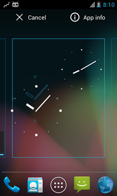
- Pada Jelly Bean, widget kini dapat Anda atur dengan lebih mudah berkat teknologi pintar yang disematkan kedalamnya. Ketika Anda menempatkan sebuah widget ke halaman utama, maka widget lain akan secara otomatis bergeser untuk memberikan ruang kepada widget yang baru.
8. Mematikan notifikasi untuk aplikasi tertentu tanpa menghapusnya
- 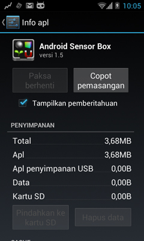
- Anda merasa terganggu dengan masuknya notifikasi dari sebuah aplikasi? Tenang, pada Jelly Bean Anda dapat mematikannya tanpa harus melakukan proses uninstal aplikasi tersebut. Untuk mematikan notifikasi yang berlaku pada aplikasi tertentu, silakan ikuti tips berikut:
- o Tekan menu dan masuk ke kelola apl
- o Pilih aplikasi yang ingin Anda matikan notifikasinya
- o Hilangkan tanda centang pada tampilkan pemberitahuan
9. Efek Hujan Jelly Bean
- Selain fungsi yang serius, Anda juga bisa mendapatkan efek hujan Jelly Bean yang lebih ditujukan untuk bersenang-senang. Anda dapat bermain-main dengan efek hujan ini cukup dengan masuk ke pengaturan. Selanjutnya masuk ke about phone dan lakukan tap beberapa kali pada keterangan Android Version yang terdapat disana. Setelah itu Anda akan melihat Jelly bean besar, lakukan tap beberapa kali hingga muncul Jelly Bean dalam jumlah banyak yang dapat Anda sapukan ke berbagai arah.
10. Barrel Roll
- 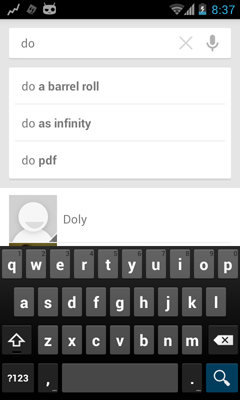
- Sebagai bagian dari fitur unik Jelly Bean, Anda dapat melakukan trik barrel roll yang merupakan upaya Google untuk memamerkan kelebihan yang dimiliki oleh browser yang dimilikinya dengan menunjukkan efek menggelindingkan halaman situs yang sedang dikunjungi layaknya sebuah roda.
Android Kitkat

merupakan versi Android terbaru 4.4, yang dapat digunakan untuk perangkat yang menggunakan RAM minimal 512 MB. Sehingga perangkat Android kelas Entry level pun akan dapat merasakan update terbaru dari OS Android terbaru dari Google ini.
10 Fitur Baru di Android Kitkat
1. Enhanced Caller ID

- Orang-orang memiliki kecenderungan untuk mengabaikan panggilan dari nomor telepon yang tidak dikenali. Nah, kalau kamu menerima panggilan yang nomornya tidak ada di dalam Kontak kamu, maka Android KitKat akan mencoba untuk mengambil informasi Caller ID dari daftar lokal dalam Google Maps. Fitur ini bisa sangat berguna bagi orang-orang yang memiliki keluarga dan teman-teman yang menelepon dari nomor tempat mereka bekerja. Misalnya gini, kamu dapat nomor dari 0274-6678xxx, nah Google bakal ngasih tau dimana lokasi dan tempat perusahaan si penelpon.
2. Ok Google

- Kamu tidak perlu lagi menyentuh layar untuk melakukan pencarian, mengirim teks, mencari arah atau memutar musik. Bila kamu berada di layar awal (home screen) atau memiliki aplikasi Google Now, kamu cukup mengatakan “Ok Google” diikuti dengan perintah untuk melakukan salah satu dari tugas-tugas yang kamu inginkan. Misal nih, kamu dapat mengatakan perintah seperti “Ok Google, where is the closest McDonalds.” atau “Ok Google, play Rihanna.” Sungguh asyik bukan?
3. Immersive Display
- 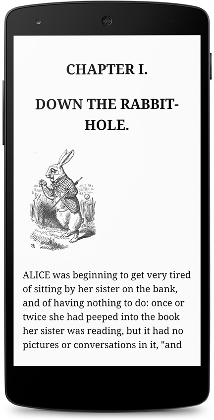
- Dalam versi Android sebelumnya, status bar dan tombol navigasi tetap muncul di layar saat kamu sedang bermain game atau menonton film. Saya kira hal itu sangat mengganggu, nah di Android KitKat ini telah ditambahkan sebuah fitur untuk menyembunyikan status bar dan tombol navigasi agar tampilan Android kamu bisa benar-benar full screen.
4. Contact Prioritization
- 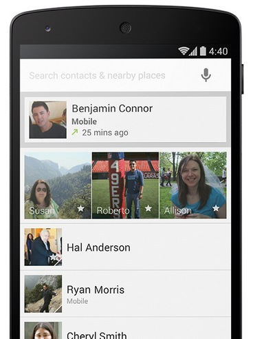
- Android KitKat mem-prioritaskan kontak berdasar pada orang-orang yang lebih sering kamu ajak SMS-an atau lebih sering kamu telepon. Dari aplikasi Contacts, kamu juga dapat mencari tempat nongkrong atau restaurant yang paling dekat di daerah kamu melalui search box yang berada pada bagian atas. Aplikasi Kontak Android KitKat ini juga ter-integrsi dengan aplikasi kontak Google kamu.
5. Message Consolidation
- 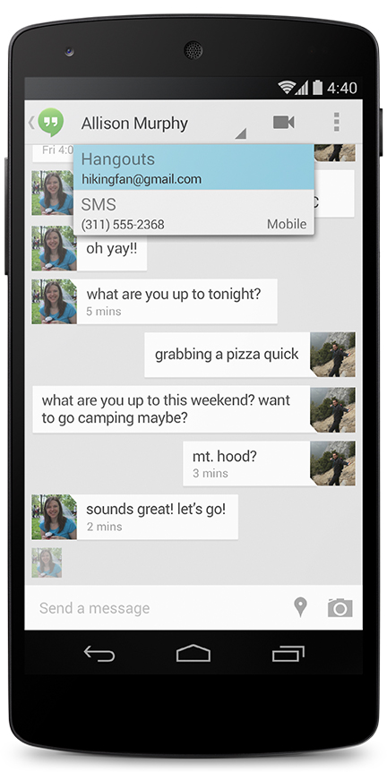
- Android KitKat telah menggabungkan SMS, MMS, Panggilan video dan Google Hangouts chat dalam satu aplikasi. Aplikasi Android KitKat Messagess juga mendukung share-location dan mengirimkan animasi GIF ke teman kamu. Hampir mirip pada aplikasi iMessage pada iOS, bedanya pada iMessage kita tidak bisa mengirim gambar gambar format GIF.
6. Emojis
- 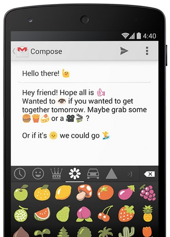
- Google telah menambahkan Emojis ke Keyboard Android KitKat. Emoji adalah istilah Jepang untuk ideogram dan smiley yang digunakan dalam pesan teks dan website. Kamu dapat menambah isi pesan kamu dengan menempatkan smiley, mobil, hewan, dan ikon menarik lainnya dengan fitur ini. Fitur ini meniru pada iOS keyboard, tapi ndak apa-apa, yang bagus-bagus memang harus ditiru, selama itu tidak melanggar hak cipta.
7. Cloud Printing Support
- 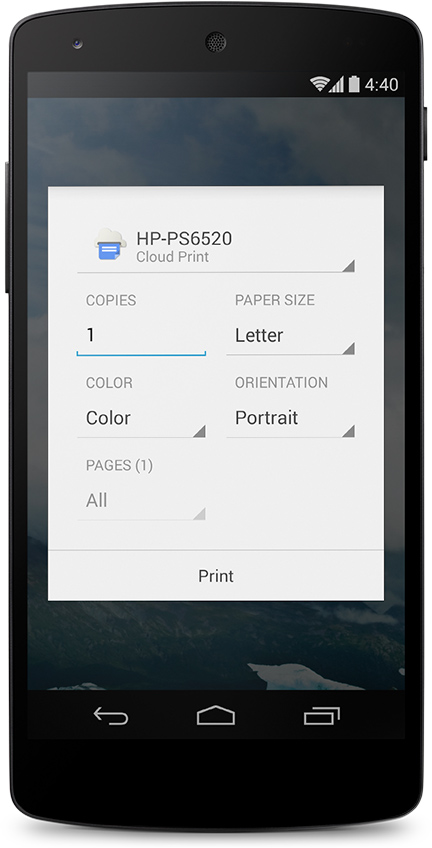
- Android KitKat memiliki dukungan untuk Cloud Printing (pencetakan di awan). Jadi, kamu bisa mencetak dokumen, presentasi, website dan foto dari ponsel KitKat atau tablet. Agar fitur ini bisa bekerja, printer kamu harus terhubung ke Google Cloud Print atau HP ePrint.
8. Quickoffice
- 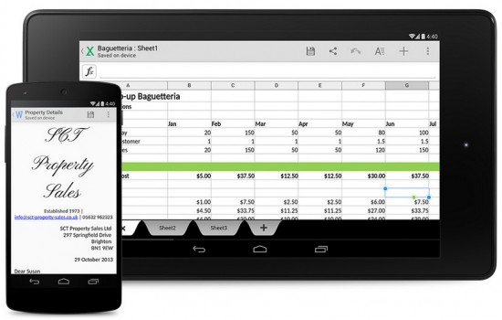
- Google Quickoffice akan terinstal dengan Android KitKat. Quickoffice mendukung pengeditan dokumen, spreadsheet, dan presentasi yang dibuat dengan Microsoft Office atau Google Docs. Ketika Anda login ke Quickoffice menggunakan akun Google kamu, aplikasi akan menampilkan dokumen yang telah tersimpan dalam Google Docs dan akun Google Drive. Juara. Tidak rugi Google mengakuisisi QuickOffice tahun lalu.
9. Step Detector And Step Counter
- 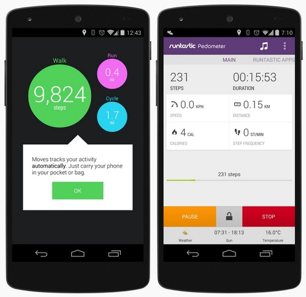
- Android KitKat memiliki detektor langkah dan penghitung langkah, sehingga aplikasi yang berhubungan dengan kebugaran/fitness dapat melacak ketika pengguna sedang berjalan, berlari, dan memanjat tangga. Langkah detektor ini menggunakan input accelerometer untuk mengenali ketika pengguna telah mengambil langkah. Penghitung Langkah ini akan melacak jumlah langkah sejak terakhir kamu me-restart perangkat kamu. Aplikasi Runtastic Pedometer menggunakan Step Detektor dan Step Counter ini untuk melacak apakah kamu sudah melakukan 10.000 langkah per hari yang direkomendasikan untuk mempertahankan gaya hidup sehat.
10. Full-Screen Album And Movie Art Combined With Controls
- 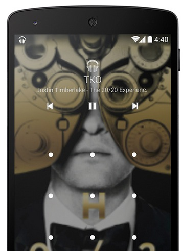
- Ketika kamu sedang memainkan streaming musik atau memproyeksikan film ke Google Chromecast dari perangkat KitKat kamu, kamu bisa melihat full-screen album dan Movie art di tampilan gadget Android kamu. Pada layar terkunci (lock screen) di situ bakal ada kontrol yang memungkinkan kamu untuk memutar (Play), Pause, atau melompat ke lagu selanjutnya atau bab film selanjutnya.
Tips & Trik Android
- 1. Rooting
- 2. Custom Roms
- 3. Flashing
Apa itu Customs ROMs?
- Custom Roms adalah file system firmware perangkat baik berupa handphone, tablet maupun PC yang OS sudah di kostumisasi oleh developer pihak ke 3 dengan tujuan tertentu dan dengan mengubah firmware resmi-asli (Stock ROM ) bawaan vendor perangkat tersebut.
- Tidak terkecuali pada perangkat berbasis android, firmware pada android juga dapat dimodifikasi, oleh sebab itu dinamakan dengan android mod (android modification) atau yang lebih dikenal dengan sebutan custom ROM. Sebenarnya ROM sendiri artinya adalah Read Only Memory, tetapi ketika digunakan dalam komunitas modding android maka artinya menjadi custom OS image yang di install kedalam area ROM didalam HP.
Bagaimana cara mendapatkan custom ROMs?
- Sebelum kita mendapatkan/meng-install Custom ROMS terlebih dahulu anda memastikan bahwa anda memiliki beberapa hal berikut ini:
- File Custom ROM.
- Download File Custom Recovery di XDA, biasanya berbentuk RAR atau ZIP, setelah itu masuk kedalam Default Recovery dan Install Custom Recovery dari Default Recovery
Langkah - Langkah untuk melakukan Instalasi Custom ROMS pada Device Android anda;
- 1.Simpan file Custom ROM (dan jika ada bahan-bahan lain yang dibutuhkan) didalam SDCard milik anda (Bukan di External SDCard)

- 2.Jika seluruh file sudah siap dan lengkap, silahkan matikan Device Android anda
- 3.Kemudian, silahkan masuk kedalam Custom Recovery milik anda (Tekan tombol Volume Up + Power + Home secara bersamaan)
- 4.Lakukan Factory Reset - Pilih Yes
- 5.Pilih "Install zip from SDCard" → choose zip from SDCard. Kemudian anda akan mendapatkan beberapa File dan Folder yang ada didalam SDCard anda
- 6.Pilih Custom ROM yang sudah anda miliki - Pilih Yes
- 7.Wipe cache dan dalvik cache - Pilih Yes
- 8.Reboot,Tunggu sebentar. Biasanya Reboot awal memakan waktu sekitar 3 sampai 4 menit untuk memulai dari awal. kalau Reboot-nya memakan waktu hampir seharian penuh, itu mungkin aja Bootloop, silahkan lakukan Step 3 kembali atau Install kembali Stock ROM
- 9.Kini anda sudah bisa menikmati Custom ROM yang ingin anda gunakan
Flashing

- Flashing adalah menginstal ulang Sistem Operasi (OS) yang berguna untuk memperbaiki software jika ada masalah dan bisa juga untuk Downgrade atau Upgrade OS.
Efek Positif dan Negatif dalam melakukan flashing
1. Efek Positif
- Efek positif dari flashing adalah terupgradenya Operating System dari android untuk meningkatkan kinerja perangkat atau downgrade untuk memperbaiki Operating System android yang tidak compatible dengan perangkat.
2. Efek Negatif
- Efek negatif dari flashing android adalah processor perangkat akan bekerja ekstra dan panas, beberapa aplikasi akan error pada saat dijalankan, fungsi call/sms yang tidak sempurna dan terdapat file malware/virus selama flashing